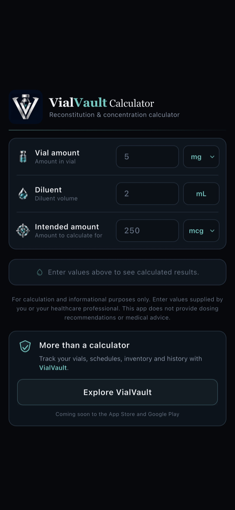
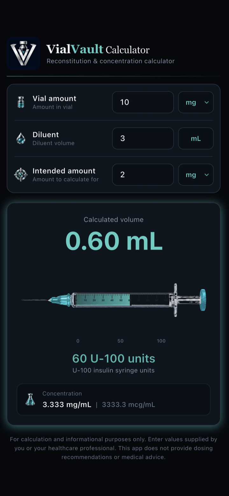
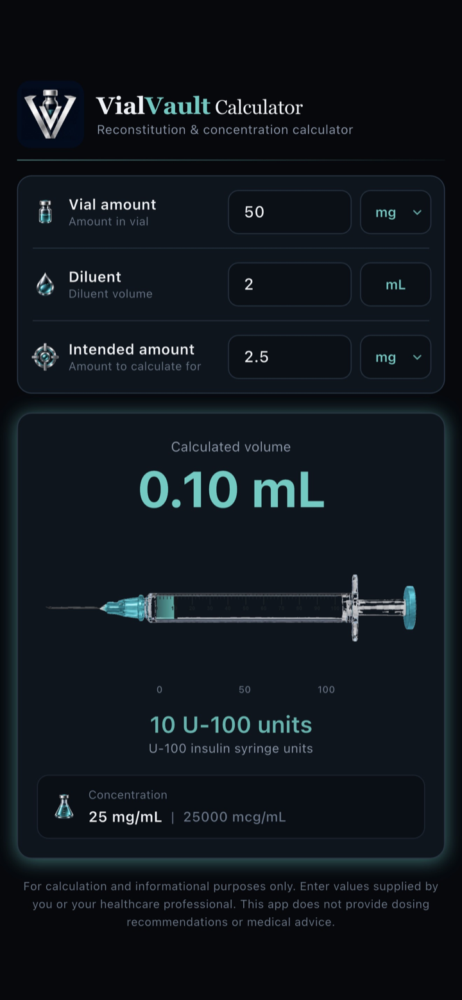

01
Vial concentration calculations
Calculate concentration from the vial amount and diluent volume you enter.
A Crux Horizon product
A purpose-built mobile calculation tool designed to simplify vial reconstitution and concentration calculations.
Enter a vial amount, diluent volume, and intended amount to calculate concentration and the draw volume needed — including a clear U-100 syringe visualisation. Calculations run on-device for the active session.
iOS — Released Android — Released
App screenshots
Official App Store screenshots showing the input workflow, calculated draw volume, and U-100 syringe visualisation.



Why it exists
Reconstitution and concentration maths are easy to get wrong when switching between mg, mcg, millilitres, and syringe units.
VialVault Calculator keeps that workflow purpose-built: enter the values you already have, review the calculated concentration and draw volume, and inspect the corresponding U-100 syringe measurement — without accounts, history, or cloud sync.
Core capabilities
Each capability supports fast, on-device reconstitution and concentration calculations from values you enter.
Calculate concentration from the vial amount and diluent volume you enter.
Work from vial amount and diluent volume to understand the resulting concentration clearly.
Convert an intended amount into the draw volume required for that calculation.
Review calculated results alongside a clear U-100 syringe measurement view.
A focused, intuitive interface for entering values and reviewing calculated results.
Values are processed in memory for the active session. The app does not store calculation history.
Privacy approach
VialVault Calculator does not use accounts, analytics, advertising, or cloud sync. Calculator inputs and results are processed in memory for the active session and are not transmitted by the app.
Read the VialVault Calculator Privacy PolicyImportant
VialVault Calculator is an informational calculation tool and does not provide medical advice or dosing recommendations.
All calculations use values entered by the user. Always verify results independently before use.